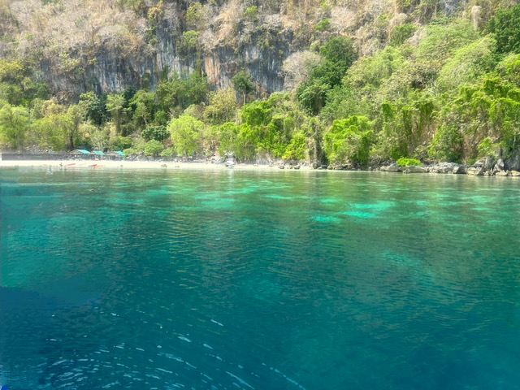
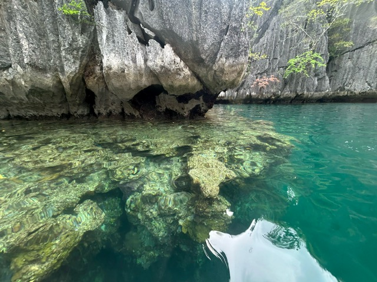

Coron is an island located in northern Palawan in the Philippines. Visiting this place is highly recommended when travelling to the Philippines. Coron Palawan Travel Guide provides great information about this beautiful island.

The most popular thing to do in Coron is to go in one or more island hopping tours. These tours includes visiting different beaches, lakes, and lagoons. Lunch made fresh by the boat crew is also provided in these tours. Other things to do are included in the following list.
| Restaurant Name | Cuisine | Special Diets |
|---|---|---|
| Pacifico Coron | Pizza International Grill |
Vegetarian friendly Vegan options |
| Alfresco Coron | Bar International Asian Fusion |
Vegetarian friendly Vegan options Gluten free |
| El Kuvo | Filipino International Asian Fusion |
Vegetarian friendly Vegan options |
| Sharky's Restobar | Filipino Bar Asian |
Vegetarian friendly |
| Om's Thai Restaurant | International Asian Thai |
Vegetarian friendly Vegan options |
| Amihan Bistro | French European |
Vegetarian friendly Vegan options |
| Ramen Sakura | Japanese Asian |
Vegetarian friendly |
